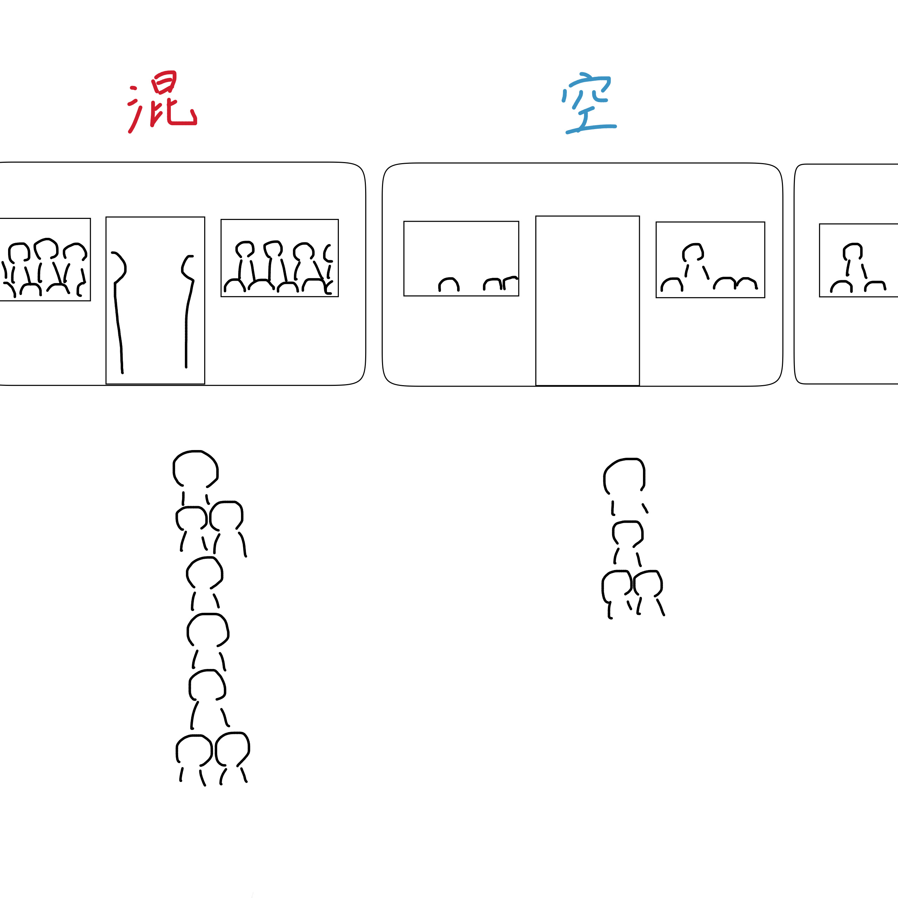
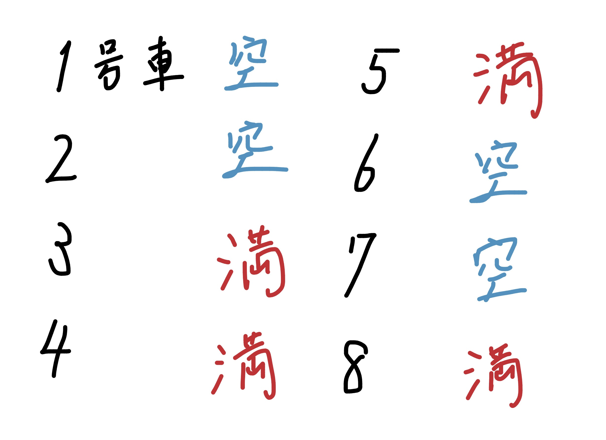

1.課題
夏季休業中行動範囲が広がり、電車に乗る機会が増えた。
そこでみつけた課題は以下の図のようなことだ。

まず、混んでいる車両と空いている車両があり、その差がかなりあるように感じた。
そして、そこに並ぶ人々も電車が到着するまでは車両の混雑状況に気がつけない。
並んでいる号車が混んでいる場合もあるし、他の号車がとても空いている場合もある。
さらに、電車を待つ列にもばらつきがあり、非効率的なように感じる。
2.課題解決のアイデア
1の課題を解決するために、以下のような案を考えた。

これは、最近一蘭に行って思いついたシステムだ。
一蘭では、入り口近くの食券を買うスペースに店内の案内板があり、席の位置にランプがついている。
客がいない席には『空』のランプがつく。赤外線センサーによって、客の有無を感知して表示している。
このシステムを電車にも応用できないかと考えた。
事前に号車ごとの混雑状況がわかれば、混雑を避けることができて効率的だ。
各号車におよそ均等に乗客が振り分けられるので、一回の運行でより多くの乗客を運ぶことにもつながるだろう。